1층 시설 안내 *Acts29 비전 빌리지는 성도님들의 기도와 헌금으로 유지 운영되는 시설이오니 이용시 절약 및 안전에 주의 해주시기 바랍니다. *시설을 사용하실때 예배와 기도하는 마음으로 정숙과 질서를 유지해 주시기 바랍니다.
시설현황도
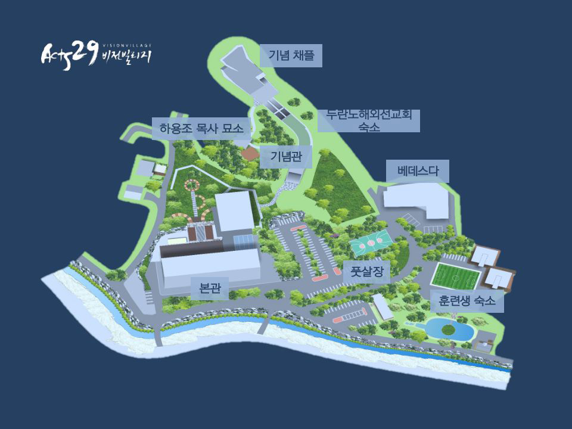
본관 전경
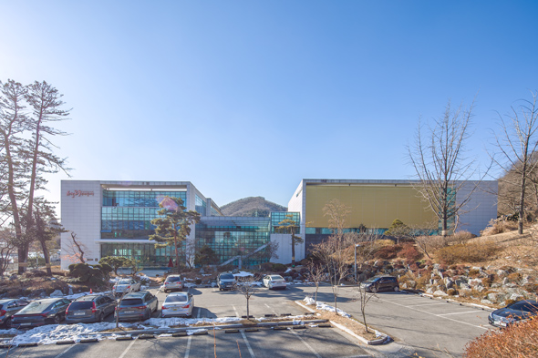
로비&복도
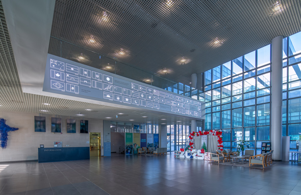
로비
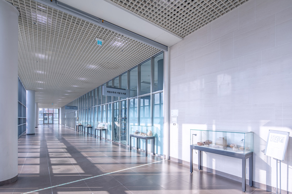
복도
식당
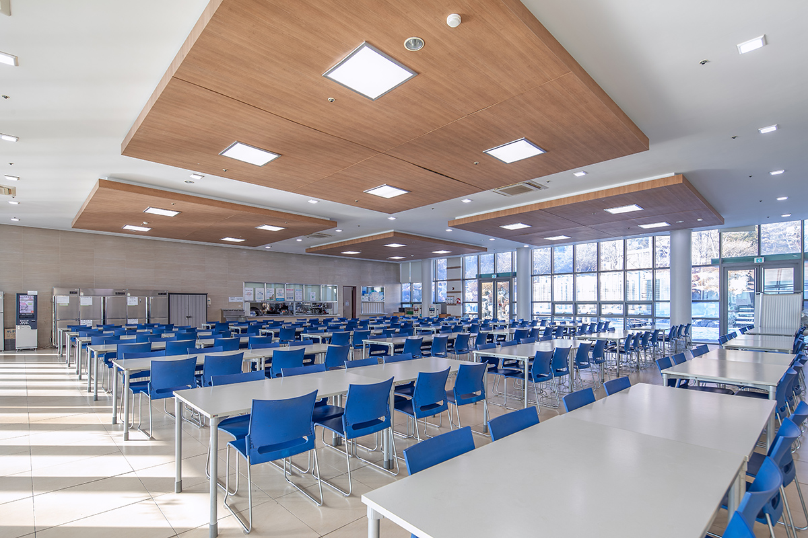
오병이어홀
양면이 유리로 되어있어 자연 채광과 주변 자연을 보며 보다 쾌적한 환경속에서 식사할 수 있도록 준비되어 있습니다.
수용인원 : 200명
이용기간 : 오전 7시 30분, 오후 12시 30분, 오후 5시 30분
기도실
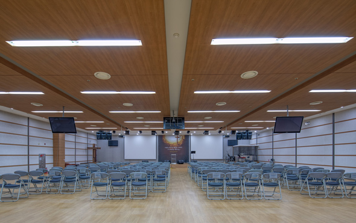
시안홀
Acts29 비전 빌리지를 찾는 모든 이들이 시므온과 안나처럼 예수그리스도를 다시 오심을 기다리며 1년 365일 24시간 무릎으로 열방을 향해 나아가는 기도실입니다.
이용시간 : 24시간 개방
도서관
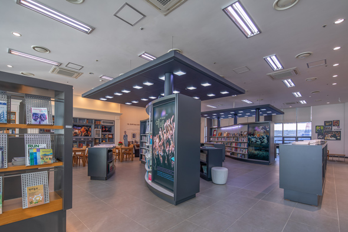
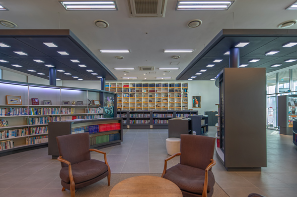
하용조목사님 기념관
레이놀즐 도서관은 조용히 성경과 영적 성령을 묵상하며 도서를 읽는 공간입니다. 다양한 신앙서적과 선교관련 도서가 구비되어 있으며 컴퓨터를 통해 인터넷 검색 및 자료 정리를 할 수 있습니다.
이용시간 : 오전 9시 - 오후 10시까지
카페&풋살장
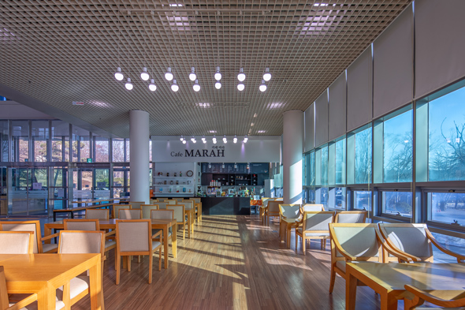
카페 마라
풋살장
하용조기념채플
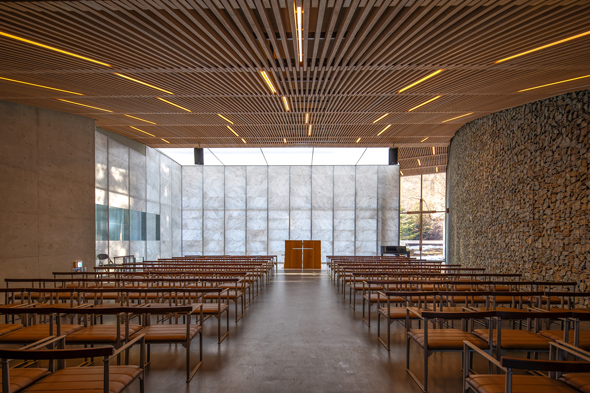
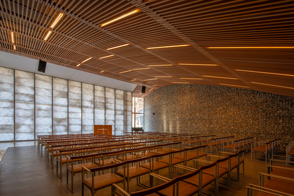
광장
열방광장
열방광장은 다양한 야외 활동을 위해 준비되어져 있습니다.
다양한 야외 활동을 위한 공간인 열방광장은 오병이어 식당 후면에 준비되어져 있으며 심신을 단련하여 땀 흘려 하나되는 공간입니다.
이용시간 : 오전 9시 - 오후 10시까지
등산로
벧엘등산로
벧엘등산로는 가파른 산언덕을 오르고 꽃재 정상을 거쳐 순교자 기념관에 이르는 등산로입니다.
벧엘 예배당 앞을 지나 가파른 산언덕을 오르고 가쁜 숨을 내시며 선교자적 열정을 체함하며 순교자의 피흘림을 통해 이땅에 뿌려졌던 복음의 열매가 나임을 알고 하나님의 사랑을 만나는 등산로입니다
위치 : 벧엘 예배당 앞에서 출발
피난안내도
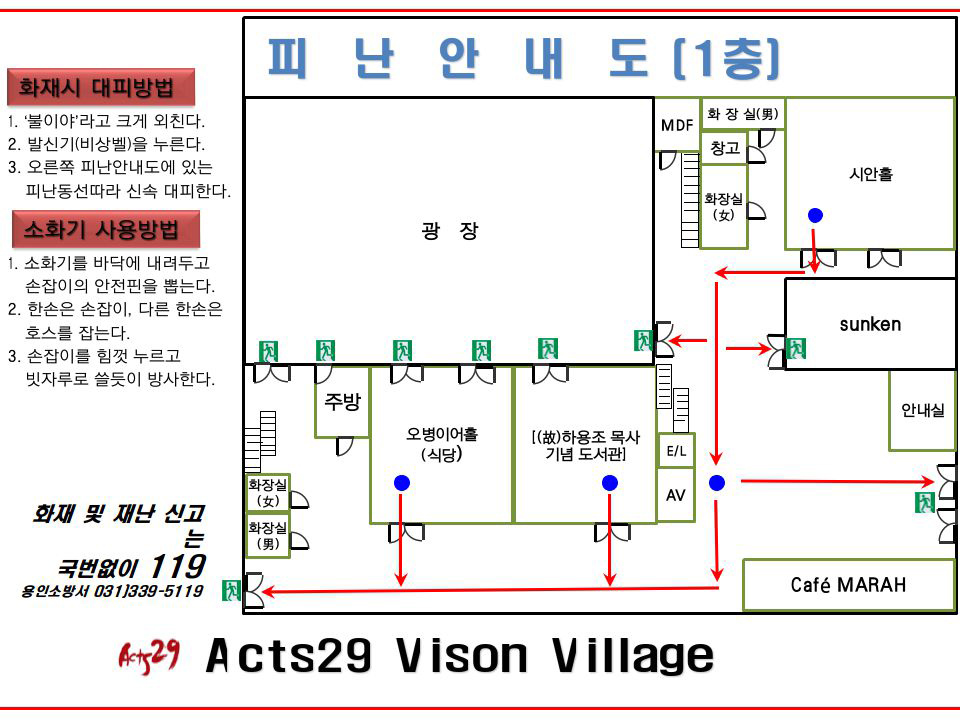